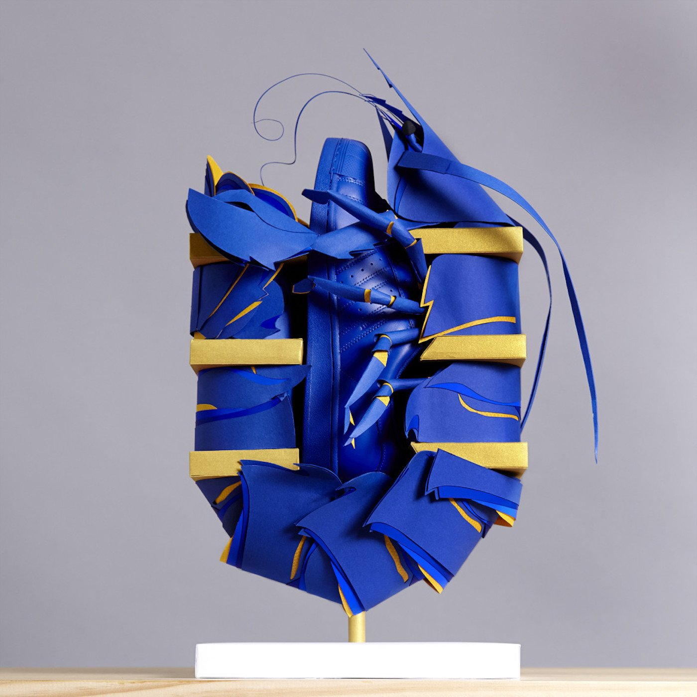
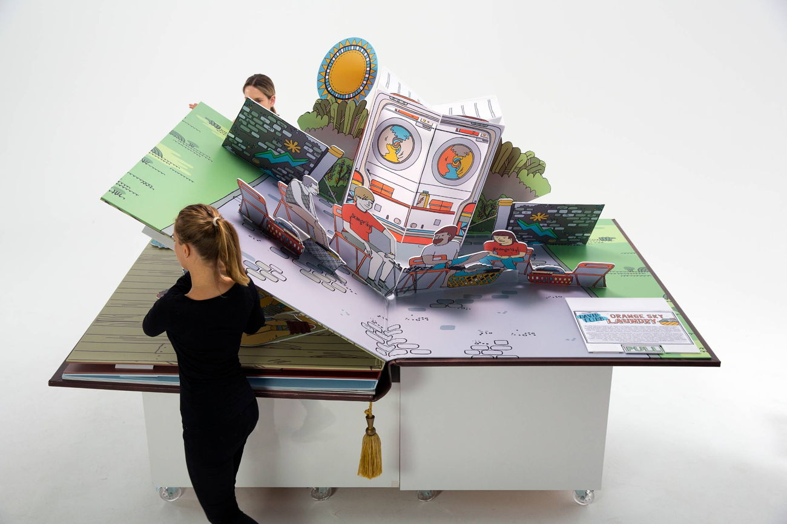
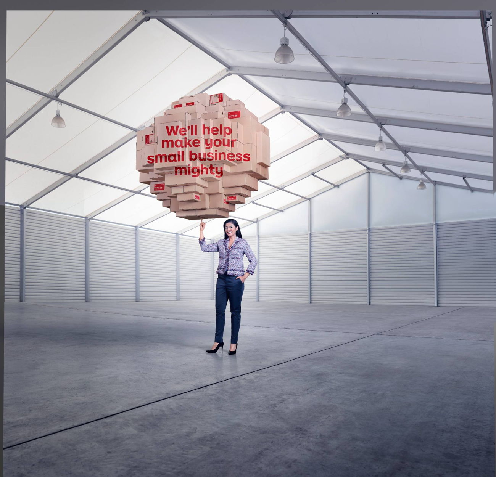

Benja Harney is a self-taught paper engineer living and working in Sydney, Australia. He makes anything and everything out of paper, creating pop-up books, paper sculptures, installations, illustrations, packaging, fine art, fashion, animation, and set designs out of the delicate material.
As he shares, paper is his passion as the humble medium inspires and challenges him every time he sits down at his cutting mat. The result of his endlessly inventive craft comes in the shape of flowers, animals, masks, clothing, and much more. They are both strong and delicate, complex and simple.


